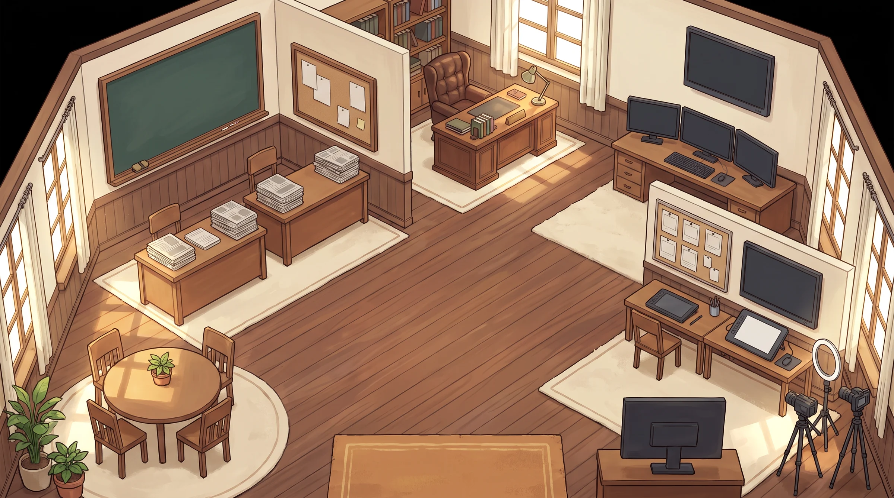

나만의 AI 편집국
나만의 AI 편집국
CONTEXT RELAY NEWSROOM
1×
2×
4×
대기 중

편집국에 보내기
데모: 세무사 수석 기사
링크를 보내면 국장이 지시서를 쓰고, 취재부·편성부·제작부가 컨텍스트 카드를 넘겨받으며 웹툰이나 팟캐스트를 만들어요. Claude 데스크톱 앱에서 열면 링크를 직접 읽고, 다른 곳에서는 본문을 붙여넣으라고 안내해요.
편집국으로 돌아가기
실험 기록 저장(JSON)
B를 관심 기사로 이어 보기